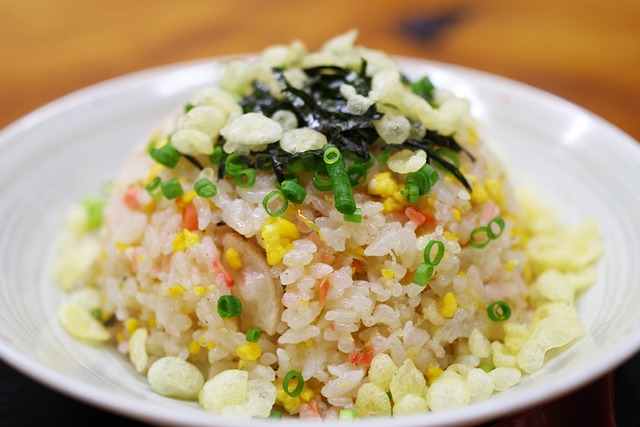

Fried Rice

Easy, Flexible Fried Rice
Fried rice is one of my favorite things to make. It's the perfect canvas for a simple meal or you can elevate it for a date night in. The ingredients can often be staples found in fridge and pantry, the prep is minimal, and final product tastes amazing.
Feel free to add or take what you need here, the important thing is following the proper steps!
Ingredients
- 2 cups of day old or freshly cooked rice
- Protein of choice (Chicken, steak, ground pork, spam, or tofu)
- Yellow onion
- Green onion
- 2 eggs
- Diced carrots
- Soy sauce
- MSG
- Sesame Oil
- Vegetable oil or any other high heat oil
Directions
- Chop and prepare all mix-ins, green onion tops should be put away for the end of cooking, the whites will be stir fried with the yellow onion. Cooking is very quick so everything should be in place to add before cooking.
- Beat eggs until no egg white are visable, mixture should be completely homogenous. Add a small amount of soy sauce to the eggs so the sodium will help break them down.
- Once wok is hot add about a tablespoon of oil. Tilt wok around to coat the surface, there should be a small amount pooled at the bottom. Pour your eggs into this, stirring and folding. Remove to the side once coked.
- Wipe out wok if neccessary. Add more oil and swirl. Cook your protein until close to done. Add mix ins and extra oil as needed.
- Once protein is cooked and mix ins are browned add in extra oil as needed and rice. Note that if you used raw meat, swap out your stirring utensil to avoid cross contamination. Toss and stir fry everything together quickly. This only takes a few minutes.
- While stir frying add soy sauce, msg, and a drizzle of sesame oil. Be sure to pour soy sauce on the side of the wok, not directly on the rice.
- Plate, garnish with green onion tops and season with additional soy sauce if necessary.